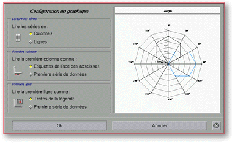
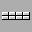
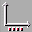
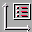

<!-- Documentation XQuad (c)1995-2000 AXENE contact axene@axene.org>
<html>

<head>
<title>Configuration du graphique</title>
</head>

<body BGCOLOR="#FFFFFF" BACKGROUND="Images/back.gif" TEXT="#000000">

<p ALIGN="right">  </p>

<p><br>
<br>
<a NAME="geometry">La boîte de dialogue &quot;Configuration du graphique&quot; permet de
choisir la géométrie de la région de cellules, source des données utilisées pour le
calcul du graphique. La géométrie de la région de cellules correspond aux découpages
en séries de cette région et à la présence d'un titre, d'un nom de série et/ou d'un
nom d'abscisses. Pour accéder à cette boîte, il faut qu'un seul cadre graphique soit
sélectionné dans la feuille de calcul et cliquer sur le dernier </a><a HREF="HBar_Graphics.html#setup_icon">bouton icône</a> de la quatrième section de la
barre horizontale de manipulation de graphiques ou sélectionner l'entrée &quot;<a HREF="Menu_Graph.html">Grapheur</a> / <a HREF="Menu_Graph.html#setup_menu_entry">Configuration</a>&quot;
dans la barre de menu. </p>

<p><br>
</p>

<p><a NAME="terminology"><b>Terminologie&nbsp;:</b></a> </p>

<p>Etant donné la partie de feuille de calcul suivante&nbsp;: </p>

<p align="center"> </p>

<p align="center"><i>Photo d'écran: Exemple de feuille de calcul.</i> </p>

<p>Pour créer un graphique intéressant depuis ce tableau, il faut sélectionner la
région de cellules B2:D14 comme source des valeurs du graphique. Dans ce tableau, la zone
de valeur à reporter dans le graphique est la région C3:D14. Cette région doit être
découpée <b>en 2 séries de 12 valeurs :</b> les régions C3:C14 et D3:D14. Le
découpage en série est fait <b>en colonnes</b>. Les cellules C2 et C3 sont <b>les noms
des séries</b>. La cellule B2 est <b>le titre ou nom du graphique</b>. Les cellules de la
région B3:B14 sont <b>les noms des abscisses ou étiquette de l'axe des abscisses</b>. </p>

<p><br>
</p>

<hr>

<p><br>
</p>

<p align="center"> <br>
<small><i>Photo d'écran : Boîte de configuration du graphique </i></small></p>

<p><br>
</p>

<hr>

<p><br>
</p>

<h3>Partie gauche de la boîte de dialogue :</h3>

<ul>
  <li> <a NAME="column_button">le bouton <i>&quot;Colonnes&quot;</i>
    permet d'<b>indiquer que les valeurs d'une même série de données seront prises dans une
    colonne</b>. Dans l'exemple, c'est en colonne que doivent être lues les séries pour
    obtenir un graphique intéressant. </a><br>
    &nbsp;</li>
  <li> <a NAME="row_button">le bouton <i>&quot;Lignes&quot;</i>
    permet d'<b>indiquer que les valeurs d'une même série de données seront prises dans une
    ligne</b>. Dans l'exemple, si on sélectionne ce bouton, on obtient un graphique avec 12
    séries de 2 valeurs, ce qui n'offre pas beaucoup d'intérêts. </a><br>
    &nbsp;</li>
  <li> <a NAME="absc_label_button">le bouton <i>&quot;Etiquettes
    de l'axes des abscisses&quot;</i> permet d'<b>indiquer que la première colonne de la
    région de cellules contient les étiquettes de l'axe de abscisses</b>. Si les séries
    sont lues en lignes, alors ce bouton permet d'indiquer que c'est la première ligne qui
    contient les noms des abscisses. Dans l'exemple, il faut sélectionner ce bouton. A la
    création de ce graphique, XQuad considérera que la première colonne est à lire comme
    la première série de données, car celle-ci contient des nombres ( région B3:B14 ). </a><br>
    &nbsp;</li>
  <li> <a NAME="col_data_button">le bouton <i>&quot;Première
    série de données&quot;</i> permet d'<b>indiquer que la première colonne de la région
    de cellules contient les valeurs de la première série de données</b>. Si les séries
    sont lues en lignes, alors ce bouton permet d'indiquer que c'est la première ligne qui
    contient les valeurs de la première série de données. Lorsque ce bouton est
    sélectionné, l'axe des abscisses n'a pas d'étiquette et le graphique n'a pas de titre. </a><br>
    &nbsp;</li>
  <li> <a NAME="legend_button">le bouton <i>&quot;Textes
    de la légende&quot;</i> permet d'<b>indiquer que la première ligne de la région de
    cellules contient les noms des séries</b>. Si les séries sont lues en lignes, alors ce
    bouton permet d'indiquer que c'est la première colonne qui contient les noms des séries.
    Dans l'exemple, la première ligne (région C2:D2) contient les titres des deux séries,
    donc ce bouton doit être sélectionné. </a><br>
    &nbsp;</li>
  <li> <a NAME="row_data_button">le bouton <i>&quot;Première
    série de données&quot;</i> permet d'<b>indiquer que la première ligne de la région de
    cellules contient les premières valeurs des séries de données</b>. Si les séries sont
    lues en lignes, alors ce bouton permet d'indiquer que c'est la première colonne qui
    contient les premières valeurs des séries de données. Lorsque ce bouton est
    sélectionné, il ne peut pas y avoir de nom aux séries ni de titre au graphique. </a></li>
</ul>

<p><br>
</p>

<h3><a NAME="preview_area">Partie droite de la boîte de dialogue&nbsp;:</a></h3>

<p>Cette partie contient un <b>aperçu du graphique</b> avec les paramètres actuels de la
partie gauche de la boîte. </p>

<p><br>
</p>

<h3>Partie inférieure de la boîte de dialogue&nbsp;:</h3>

<ul>
  <li><a NAME="ok_button"><i>&quot;Ok&quot;</i> permet d'<b>accepter les changements</b> dans
    les paramètres de configuration du graphique et ferme la boîte. </a><br>
    &nbsp;</li>
  <li><a NAME="cancel_button"><i>&quot;Annuler&quot;</i> <b>ferme la boîte</b> sans modifier
    la configuration du graphique. </a></li>
</ul>

<p><br>
</p>

<hr>

<p ALIGN="right"></p>
</body>
</html>
